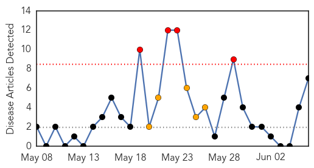
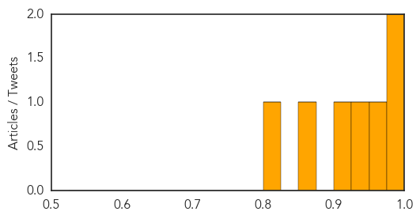

Chikungunya
30-Day Web Trend
4 alerts, 5 warnings

30-Day Twitter Trend
1 alerts, 0 warnings

Article Locations

Article Confidences
Top Articles:
- 0.992
- First case of chikungunya, a mosquito born virus, identified in Duval County
- 0.981
- Joplin rallies to send load of acetaminophen to Haitian village
- 0.969
- Health officials warn of Chikungunya virus
- 0.934
- Chikungunya Virus Spreads in Caribbean
- 0.920
- Joplin rallies to send load of acetaminophen to Haitian village
- 0.874
- Buzzing to a City Near You: Chikungunya Virus
- 0.818
- Protect Yourself from Dangerous and Disease-Carrying Bugs
Top Tweets:
-
No tweets found for Jun 06, 2014
Ebola
30-Day Web Trend
0 alerts, 0 warnings

30-Day Twitter Trend
1 alerts, 0 warnings

Article Locations

Article Confidences

Top Articles:
- 1.000
- 200Ebola Deaths Confirmed in Sub-region, No New Cases Reported in Liberia
- 0.998
- As Suspected Cases Approach 100, SLPP Joins to Fight Ebola
- 0.987
- Harvard team helps with Ebola detection in Sierra Leone
- 0.965
- Sierra Leone-based Sula Iron & Gold "ready to act" amid Ebola outbreak
- 0.961
- Liberia: Liberia: Ebola Virus Disease outbreak - Emergency appeal n MDRLR001 operations update n 2
- 0.942
- Liberia: Ebola Virus Disease outbreak - Emergency appeal n° MDRLR001 operations update n° 2 - Liberia
Top Tweets:
-
No tweets found for Jun 06, 2014